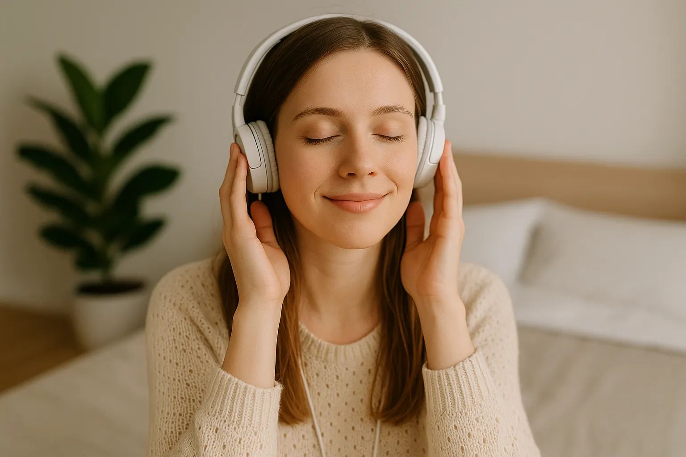

Música para calmar la ansiedad: playlist recomendada
La música tiene un poder profundo sobre nuestras emociones. En momentos de ansiedad o inquietud, elegir las canciones adecuadas puede ser la diferencia entre sentirte abrumado o volver al equilibrio. Aquí te compartimos una playlist relajante cuidadosamente seleccionada para ayudarte a calmar tu mente y respirar con más tranquilidad.
¿Por qué la música ayuda con la ansiedad?
- Activa el sistema parasimpático, el encargado de relajarnos.
- Reduce los niveles de cortisol (hormona del estrés).
- Regula la respiración y la frecuencia cardíaca.
- Te transporta a un estado emocional más seguro y armonioso.
¿Buscas otras formas de calmar tu mente? Te puede interesar esta meditación guiada para principiantes o nuestras afirmaciones para liberar pensamientos negativos.
üéß Playlist de música para calmar la ansiedad
1. Sonidos de la naturaleza
El murmullo del agua, el canto de los pájaros o el viento entre los árboles inducen una sensación de refugio y conexión con la tierra.
2. Música instrumental suave
Violines, piano lento o arpas sin letra. Estos sonidos invitan a una respiración más profunda y una mente más tranquila.
3. Frecuencias binaurales (432 Hz, 528 Hz)
Estudios indican que ciertas frecuencias sonoras reducen la tensión emocional y física. Puedes encontrarlas en plataformas como YouTube o Spotify.
4. Canciones sin ritmo acelerado
Evita la música rápida o con letras estresantes. Prioriza melodías relajantes con voces suaves.
Cuándo escuchar esta playlist
- Antes de dormir o al despertar.
- Durante un ejercicio de journaling para la ansiedad.
- Mientras haces una pausa consciente en el trabajo o estudios.
- Al practicar respiración o mindfulness (ver guía).
¿Dónde encontrar la playlist?
Te dejamos una selección ya lista para escuchar:
- üåø Spotify: ‚ÄúPeaceful Piano‚Äù
- üåô YouTube: "Música Relajante para Dormir"
- üçé Apple Music: "Ambient Chill"
No necesitas escuchar horas: con solo 10 minutos diarios ya sentirás la diferencia. Prueba, respira y conecta con tu paz interior.